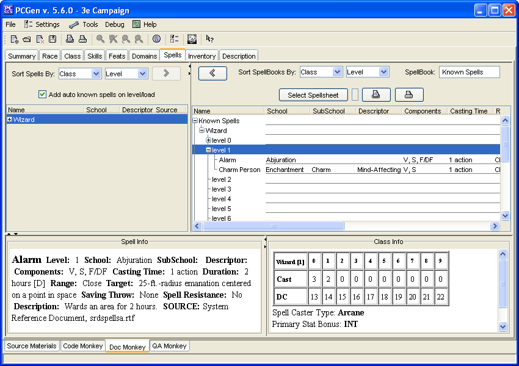

This is the Spells tab where the user can add spells to the PC is the PC is able to cast spells.
The upper table is where you can select which Class, and Level you wish to be displayed in the spells tables below.
All spell casters start with a Known Spells spell book - in this book are all the spells the caster knows.
Spell casters, which can memorize spells, can type in a name in the Book Named field and then:
If the Known Spells book is selected, the Class Info (bottom right pane) table lists all the available spells to be known for that class of that level.
Any spells which the character knows of that level will then be displayed in the Spell Info (bottom left) table - each spell can only be known once so putting them in multiple times will not work
Some classes (mostly Divine) know all spells automatically so the Selected table will match the Available table.
Only spell casters that memorize spells can choose a book other than Known Spells, and if a different book is selected the Available table lists all known spells and the Selected table lists all memorized spells for this book. In this case it is possible to memorize spells more than once.
Typical uses of this are for creating a book named "Underground" to hold which spells used when in a dungeon-crawl, or a book named "In Town" to indicate which spells used when in a town adventure.